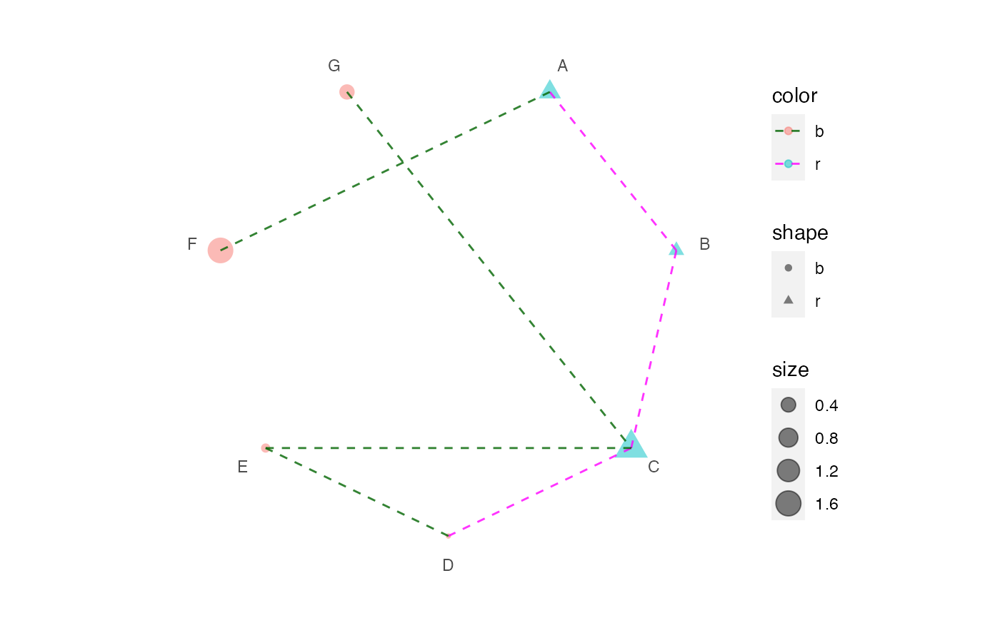

Init a dot plot in polar system
polar_init(data, x, ...)
Arguments
| data | a |
|---|---|
| x | the column name (without quote) storing event list. |
| ... | parameters passing to ggplot2::geom_point. |
Value
a ggplot object.
Examples
# ------------------- # Init a polar plot # ------------------- data <- data.frame(x = LETTERS[1:7]) p1 <- polar_init(data, x = x) p1# Set aes value p2 <- polar_init(data, x = x, size = 3, color = "red", alpha = 0.5) p2 # Set aes mapping set.seed(123L) data1 <- data.frame( x = LETTERS[1:7], shape = c("r", "r", "r", "b", "b", "b", "b"), color = c("r", "r", "r", "b", "b", "b", "b"), size = abs(rnorm(7)) ) # Check https://ggplot2.tidyverse.org/reference/geom_point.html # for how to use both stroke and color p3 <- polar_init(data1, x = x, aes(size = size, color = color, shape = shape), alpha = 0.5) p3 # -------------------- # Connect polar dots # -------------------- data2 <- data.frame( x1 = LETTERS[1:7], x2 = c("B", "C", "D", "E", "C", "A", "C"), color = c("r", "r", "r", "b", "b", "b", "b") ) p4 <- p3 + polar_connect(data2, x1, x2) p4 # Unlike polar_init, mappings don't need to be included in aes() p5 <- p3 + polar_connect(data2, x1, x2, color = color, alpha = 0.8, linetype = 2) p5 # Use two different color scales if (requireNamespace("ggnewscale")) { library(ggnewscale) p6 = p3 + new_scale("color") + polar_connect(data2, x1, x2, color = color, alpha = 0.8, linetype = 2) p6 + scale_color_brewer() p6 + scale_color_manual(values = c("darkgreen", "magenta")) } 